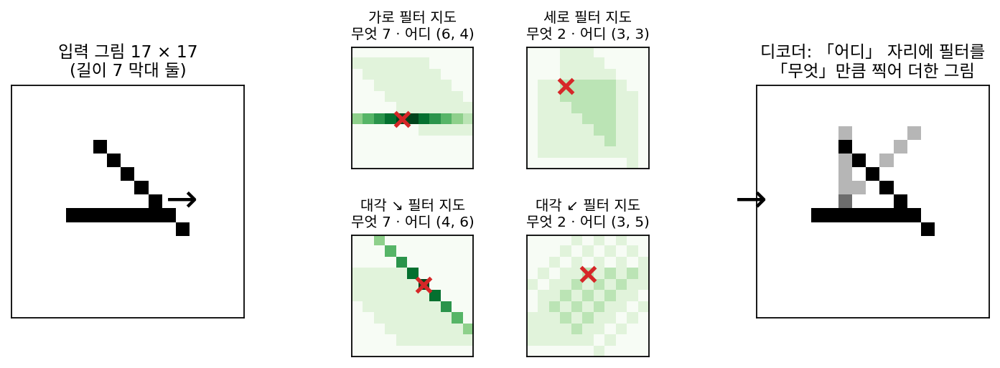
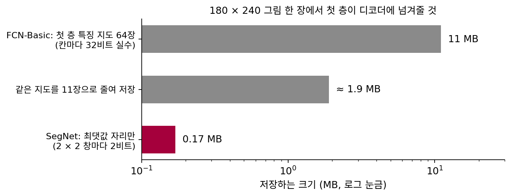
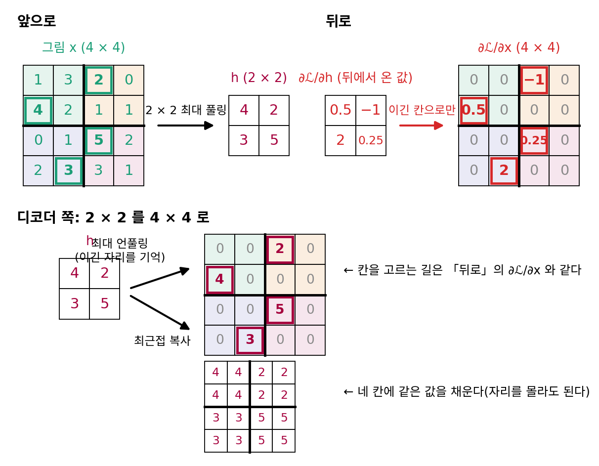
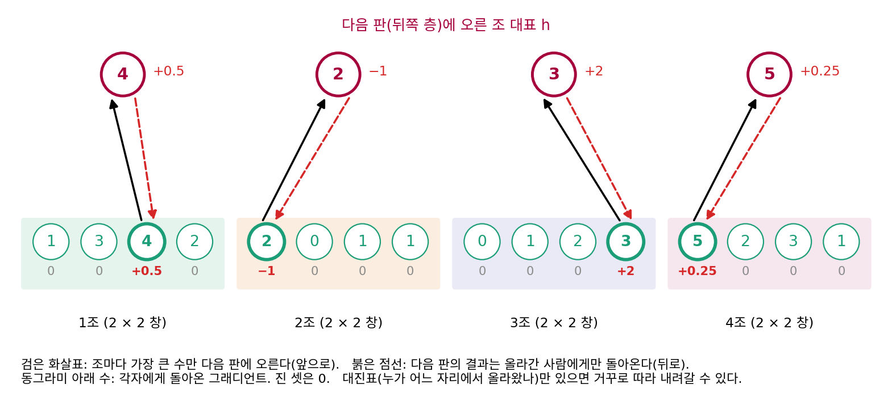
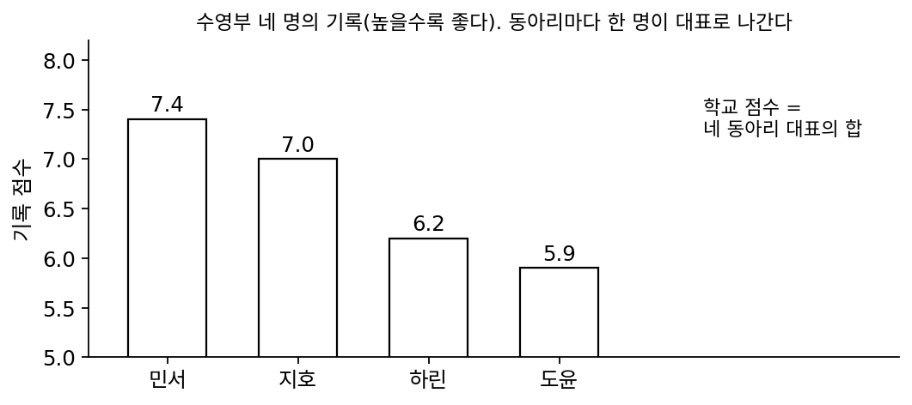
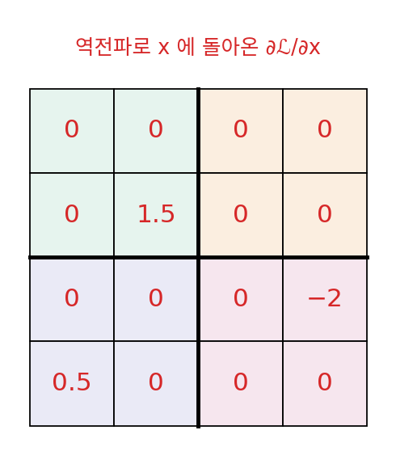
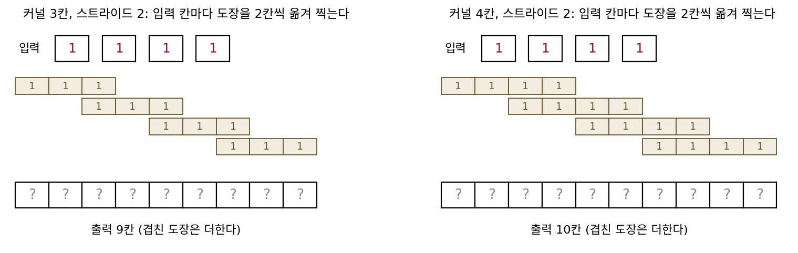

미분이 흐르는 길: 합성곱·최대 풀링과 그 반대 방향
지금까지 만든 오토인코더는 층마다 행렬을 곱하고 ReLU 를 씌우는 MLP였다. 인코더가 784칸을 2칸으로 줄일 때도, 디코더가 2칸을 784칸으로 키울 때도 층은 모두 「곱하고 더하기」라서, 역전파는 곱했던 행렬을 거꾸로 거쳐 그래디언트를 앞 층으로 보낸다. 그런데 사진을 알아보는 분류기는 대개 다른 층을 쓴다. 작은 창을 그림 위에서 밀며 창 안의 칸들에 가중치를 곱해 더하는 합성곱 층, 그리고 2 × 2 칸마다 가장 큰 값 하나만 남기는 최대 풀링 층이다. 신경망을 학습하려면 층마다 미분할 수 있어야 하는데, 가장 큰 값 하나를 「고르는」 계산에도 미분이 있을까? 분류기를 뒤집어 디코더를 만들려고 하면 물음이 하나 더 생긴다. 최대 풀링은 네 칸 가운데 세 칸을 버렸다. 디코더가 한 칸을 네 칸으로 되돌릴 때 버려진 세 칸에는 무엇을 채우고, 학습 신호는 네 칸 가운데 어디로 보내야 할까?
역사: 가장 큰 값이 있던 자리를 적어 두기
2007년 뉴욕 대학교의 란자토(Marc’Aurelio Ranzato)와 르쿤(Yann LeCun)을 비롯한 네 사람은 라벨 없이 특징을 배우는 인코더–디코더를 내놓았다. 그들은 그림 한 장을 두 가지로 나누어 적으려 했다. 그림 안에 「무엇」이 있는지와 그것이 「어디」에 있는지다. 논문의 장난감 실험에서 입력은 17 × 17칸 흑백 그림이고, 길이 7칸인 막대 두 개가 엇갈려 있다. 막대마다 방향은 넷 가운데 하나, 자리는 그림 가운데 5 × 5 가운데 하나다. 인코더는 7 × 7 필터 네 개를 그림 위에 밀어 11 × 11 지도 넷을 만들고, 지도마다 가장 큰 값 하나와 그 최댓값이 나온 자리를 적는다. 가장 큰 값 넷은 어느 방향의 막대가 있는지를, 자리 넷은 막대가 어디 있는지를 담는다. 막대를 다른 자리로 옮겨도 가장 큰 값은 바뀌지 않는다. 디코더는 지도마다 적어 둔 자리에 최댓값을 놓고 나머지 칸을 모두 0으로 둔 뒤, 필터 모양을 최댓값만큼 찍어 더해 그림을 되살렸다. 이렇게 라벨 없이 배운 특징 위에 분류기를 얹어 MNIST 시험 숫자의 0.64%만 틀렸다.

가장 큰 값의 자리를 적어 두는 생각은 다 배운 분류기의 속을 들여다보는 데도 쓰였다. 2012년 크리제브스키(Alex Krizhevsky)와 동료들의 합성곱 신경망은 ImageNet 대회에서 오류율 16.4%로 2위(26.1%)를 크게 앞섰다. 그런데 2013년 말 뉴욕 대학교의 제일러(Matthew Zeiler)와 퍼거스(Rob Fergus)는 이런 신경망이 왜 그렇게 잘 되는지 분명한 이해가 없다고 적었다. 두 사람은 학습을 마친 분류기의 층마다 거꾸로 가는 층(디컨볼루션 네트워크)을 붙였다. 위층의 칸 하나만 남기고 나머지를 0으로 둔 뒤 그림까지 내려 보내는데, 최대 풀링은 되돌릴 수 없으므로 앞으로 갈 때 창마다 가장 큰 값의 자리를 「스위치」에 적어 두고, 내려올 때 스위치가 가리키는 칸에만 값을 놓았다. 합성곱 층은 같은 필터를 위아래·좌우로 뒤집어 다시 걸었다. 이렇게 크리제브스키의 신경망을 들여다보자 둘째 층에서 무늬 겹침(에일리어싱)이 보였다. 첫 층이 창을 4칸씩 건너뛰며 옮긴 탓이었다. 첫 층의 필터를 11 × 11에서 7 × 7로 줄이고 건너뛰는 칸을 2로 줄인 모델은 모델 하나끼리 비교한 시험 오류율이 1.7%포인트 낮았고, 여러 모델을 합쳐 14.8%에 이르렀다.
2015년 케임브리지 대학교의 바드리나라야난(Vijay Badrinarayanan), 켄들(Alex Kendall), 치폴라(Roberto Cipolla)는 같은 생각을 SegNet 의 디코더에 넣었다. SegNet 은 길거리와 실내 사진을 칸마다 도로, 보행자, 하늘 같은 종류로 나누는 신경망이다. 디코더가 줄어든 지도를 키울 때, 같은 단계의 인코더가 최대 풀링에서 적어 둔 자리에 값을 놓고 나머지를 0으로 둔 뒤 합성곱으로 빈 칸을 채운다. 논문은 이 착상이 란자토와 동료들의 구조에서 왔다고 밝혔다. 자리 하나는 2 × 2 창마다 2비트면 적을 수 있다. 인코더의 특징 지도를 실수로 모두 넘기는 방법과 저장할 크기를 비교한 값이 아래 그림이고, 논문은 자리만 넘기는 대가로 정확도가 조금 떨어지지만 실제로 쓰기에 알맞다고 적었다.


최댓값 자리를 적는 건 지금은 PyTorch 에서 return_indices=True 한 줄이잖아요. 그게 논문 세 편에 걸쳐 나올 일이었어요?

제일러와 퍼거스가 들여다본 신경망을 떠올려 봐요. 대회에서 2위를 10%포인트 가까이 앞섰는데, 층 안에서 무슨 일이 일어나는지 볼 도구가 없었어요. 위층의 칸 하나가 그림의 어느 부분에서 왔는지 거꾸로 따라가려면 어디에서 막힐까요?

음, 합성곱은 같은 창을 거꾸로 짚으면 될 것 같은데… 최대 풀링에서 막히네요. 네 칸 가운데 하나만 올라갔는데, 그게 누구였는지는 출력에 남아 있지 않으니까요.

그래서 앞으로 갈 때 따로 적어 둔 거구나. 그런데 SegNet 은 왜 그렇게 메모리를 아꼈어요? 11MB 면 지금 GPU 에서는 아무것도 아닌데요.

SegNet 은 길거리 장면을 알아보는 일을 겨냥했고, 논문은 추론할 때 메모리와 계산 시간이 모두 적게 들어야 한다는 것을 설계 조건으로 적었어요. 장치에 넣어 돌릴 때는 인코더의 특징 지도를 모두 들고 있기 어려운 경우가 많다고 보았고요. 실수 하나에 32비트를 쓰는 지도 대신 2비트짜리 자리만 들고 다니면 훨씬 가벼워지죠.

그런데 학습할 때도 역전파는 최대 풀링을 거꾸로 지나가야 하잖아요. 그때도 자리를 적어 둬야 해요? 애초에 가장 큰 값을 고르는 계산을 미분할 수는 있는 거예요?
넷 가운데 하나를 고르는 층을 미분하기
가로세로 4칸짜리 그림 x 를 2 × 2 창 넷으로 나누고, 창마다 가장 큰 값을 골라 2 × 2 출력 h 를 만든다. 왼쪽 위 창 (1, 3, 4, 2)에서는 4, 오른쪽 위 창 (2, 0, 1, 1)에서는 2, 왼쪽 아래 창 (0, 1, 2, 3)에서는 3, 오른쪽 아래 창 (5, 2, 3, 1)에서는 5가 올라간다(아래 그림 위 줄 왼쪽).

미분할 수 있다는 것은 입력을 아주 조금 바꿨을 때 출력이 얼마나 따라 바뀌는지가 정해져 있다는 뜻이다. 직접 바꿔 보자. 왼쪽 위 창에서 이긴 칸 4를 0.1 올리면 h 의 왼쪽 위가 4.1이 되어 0.1만큼 따라 오른다. 진 칸 3을 0.1 올려도 3.1은 여전히 4보다 작으므로 h 는 바뀌지 않는다. 그러니 이긴 칸에 대한 미분은 1이고, 진 칸에 대한 미분은 0이다. 진 칸 3을 1.5나 올려 4.5로 만들면 이번에는 3이던 칸이 이겨 h 가 4.5가 되지만, 미분은 아주 조금 바꿀 때만 따지므로 3이 4에 닿기 전까지 진 칸의 미분은 0이다. 미분이 정해지지 않는 곳은 두 칸의 값이 같아져 순위가 바뀌는 순간뿐이다. ReLU 도 max(0, u) 라서 u = 0 한 점에서만 꺾이는데, 신경망은 그 ReLU 를 아무 문제 없이 학습해 왔다.
뒤쪽 층들을 거쳐 h 로 돌아온 그래디언트가 ∂𝓛/∂h = [[0.5, −1], [2, 0.25]] 라고 하자(그림 위 줄 오른쪽). x 로 돌아가는 그래디언트는 이긴 네 칸에만 이 네 수가 놓이고, 나머지 열두 칸은 0이다. 어느 칸이 이겼는지는 앞으로 갈 때 이미 알았으므로, 최대 풀링은 앞으로 가며 창마다 이긴 칸의 번호를 적어 두었다가 역전파에서 쓴다. PyTorch 의 최대 풀링에 return_indices=True 를 주면 그 번호를 꺼내 볼 수 있다.
합성곱 층은 더 쉽다. 창 안의 칸에 가중치를 곱해 더할 뿐이라, 출력은 입력을 조금 바꾼 만큼 가중치를 곱해 따라 바뀐다. 1차원 줄 (2, 1, 3) 위에서 가중치 (w₁, w₂) = (0.5, 1)인 창을 한 칸씩 밀면 출력은 0.5 × 2 + 1 = 2와 0.5 × 1 + 3 = 3.5다. 두 출력으로 그래디언트 (1, 2)가 돌아오면, 가운데 칸 1은 두 창에 모두 들어 있었으므로 1 × 1 + 2 × 0.5 = 2를 받고, 양 끝 칸은 0.5와 2를 받는다. 출력 칸마다 받은 그래디언트가, 출력 칸이 보았던 창의 입력 칸들로 같은 가중치를 곱해 거꾸로 퍼진다.
이제 디코더 쪽이다. 2 × 2 를 4 × 4 로 키울 때, 인코더의 최대 풀링이 적어 둔 번호가 있으면 h 의 네 값을 이긴 칸에 하나씩 놓고 나머지 열두 칸을 0으로 둘 수 있다(그림 아래 줄 위쪽). 칸을 고르는 방식이 역전파에서 그래디언트를 돌려보낸 방식과 같다. 이렇게 인코더의 최대 풀링이 적어 둔 자리로 값을 되돌려 키우는 층을 최대 언풀링 (가장 큰 값이 있던 자리로 되돌리기 / max unpooling)이라 한다. 번호를 넘겨받지 않는 디코더는 네 칸에 같은 값을 채우거나(최근접 복사, 그림 아래 줄 아래쪽), 이웃 값 사이를 직선으로 이어 채운다(쌍선형 보간). 합성곱에도 같은 관계가 있다. 출력 칸마다 받은 수를 그 출력 칸의 창으로 가중치를 곱해 뿌리는 역전파 계산을, 작은 지도를 받아 큰 지도를 만드는 층으로 앞으로 쓰는 것이다. 그런 층을 전치 합성곱(transposed convolution)이라 부른다.
최대 풀링을 조별 예선에 비유하면 이렇다. 네 명씩 나뉜 조에서 가장 높은 기록을 낸 한 명만 다음 판에 오른다. 다음 판의 결과는 그 판에 오른 사람에게만 돌아오고, 같은 조에서 떨어진 세 명에게는 아무것도 돌아오지 않는다. 떨어진 사람의 기록이 조금 오르더라도 조 1위를 넘지 못하면 다음 판에 오르는 기록은 바뀌지 않는다. 대진표에 누가 어느 자리에서 올라왔는지 적혀 있으면, 결과를 들고 거꾸로 따라 내려가 그 사람을 찾아갈 수 있다. 이 대진표가 앞으로 갈 때 적어 두는 번호이고, 역전파와 최대 언풀링이 함께 쓴다.

ML에서: 키우는 층 고르기
PyTorch 에는 이 장의 계산이 모두 층으로 들어 있다. MaxPool2d(return_indices=True) 가 가장 큰 값의 번호를 내주고, MaxUnpool2d 가 그 번호를 받아 가장 큰 값이 아닌 칸을 모두 0으로 둔 「부분 역함수」를 계산한다(문서의 표현). ConvTranspose2d 의 문서는 이 층을 「Conv2d 를 입력으로 미분한 것으로 볼 수 있다」고 적고, 디컨볼루션이라고도 불리지만 실제 디컨볼루션은 아니라고 덧붙인다. 그림을 키우는 생성 모델에서는 전치 합성곱이 남기는 자국이 문제가 되었다. 2016년 오데나(Augustus Odena), 뒤물랭(Vincent Dumoulin), 올라(Chris Olah)는 온라인 학술지 Distill 에 실은 글에서, 전치 합성곱으로 그림을 키운 생성 모델의 그림에 바둑판 무늬가 자주 생긴다고 보고하고 그 원인과 처방을 정리했다.
개념 다지기: 네 칸 가운데 세 칸이 0을 받으면 앞 층은 배우기나 할까
최대 풀링 바로 앞에 합성곱 층이 있다고 해 봐요. 역전파 때 그 합성곱 층의 출력 칸 가운데 그래디언트를 받는 칸은 얼마나 될까요?
창마다 한 칸이니까 4분의 1이요. 그럼 나머지 4분의 3은 매번 0을 받네요.

잠깐, 그러면 그 칸들을 만든 가중치는 배울 기회가 없는 거 아니에요? 학습 신호의 4분의 3을 버리는 거잖아요.
민준 학생, 작은 분류기로 재 볼 수 있어요?

합성곱 8채널, 최대 풀링, 합성곱 16채널, 최대 풀링, 선형 층 10칸짜리를 MNIST 로 한 번 돌려 학습했어요. 시험 정확도 95.52%고요. 첫 최대 풀링에서 이긴 칸은 그림 한 장, 한 채널에서 25.0%예요. 그런데 시험 그림 1,000장을 차례로 넣으면 한 번이라도 이긴 칸이 83.3%예요.
그림마다 이기는 칸이 바뀌니까 여러 장을 지나면 대부분 한 번은 받는구나. 그래도 16.7%는 1,000장 동안 한 번도 못 받았네.
그 칸들이 어디 있는지 창 안의 자리별로 나눠 봐요.
음, 창 안에서 왼쪽 위 칸이 79.2%를 이기고 나머지 세 칸은 6.5 ~ 7.6%예요. 이상하네요. 숫자는 어디로든 지나가는데 왜 왼쪽 위만 이기죠?

MNIST 바탕은 밝기가 다 0이잖아. 바탕 위에서는 합성곱 출력이 네 칸 모두 같을 테니까 동점이야. 동점이면 라이브러리가 한 칸을 정해 주는데, 그게 왼쪽 위인가 봐.
세어 보니 네 칸 가운데 최댓값이 둘 이상인 창이 73.4%예요. 동점이 아닌 창만 보면 네 자리가 21.3 ~ 28.5%로 고르게 이기고요.

그럼 한 번도 못 이긴 칸은 대부분 늘 바탕인 자리겠네요. 처음 물음으로 돌아가요. 합성곱 층의 가중치는 배우나요?

합성곱은 그림 위 어느 창에서나 같은 가중치를 곱하니까, 이긴 칸 하나하나가 모두 같은 가중치에 그래디언트를 보태요. 칸마다 따로 배우는 게 아니었어요.

재 봤는데 그림 한 장의 역전파로도 첫 층 가중치 72개 가운데 71개가 0이 아닌 그래디언트를 받아요.
그래요. 진 칸이 받는 0은 「이번 그림에서는 진 칸이 출력에 닿지 않았다」는 뜻이에요. 그 0이 놓이는 자리를 정하는 기록이 또 어디에 쓰였죠?

최대 언풀링이요. 디코더가 값을 되돌려놓는 칸과 역전파가 그래디언트를 돌려보내는 칸을 같은 번호가 정해요. 미분이 흐르는 방향과 디코더가 키우는 방향이 같은 기록을 따라가네요.
문제 3. 동아리 대표의 기록
네 동아리가 저마다 부원 가운데 기록 점수가 가장 높은 한 명을 대회에 내보내고, 학교 점수는 네 대표 점수의 합이다. 수영부 네 명의 점수는 민서 7.4, 지호 7.0, 하린 6.2, 도윤 5.9다. (가) 지호의 점수가 0.1 오르면 학교 점수는 얼마나 바뀌는가? 민서가 0.1 오르면? (나) 지호가 0.5 오르면? (다) 지호와 민서가 둘 다 7.4였다면, 지호 한 사람이 0.1 오를 때와 0.1 내릴 때 학교 점수는 얼마나 바뀌는가?

(가)는 지호가 7.1이 돼도 민서 7.4보다 낮으니까 대표가 그대로라 0이에요. 민서가 오르면 대표 점수가 7.5가 되니까 0.1 올라요. (나)는 지호가 7.5가 되어 민서를 넘으니까, 대표가 지호로 바뀌고 학교 점수는 7.4에서 7.5로 0.1 올라요.
(나)에서 지호는 0.5 올랐는데 학교 점수는 0.1만 올랐네요. 지호에 대한 변화율은 얼마라고 해야 할까요?
아주 조금 바꿀 때만 보면 지호는 민서를 넘기 전까지 계속 0이에요. 0.5처럼 크게 바꾸면 순위가 바뀌는 지점을 지나가니까, 0.1 ÷ 0.5 같은 값은 변화율이 아니고요.
(다)는 어때요? 둘이 똑같이 7.4예요.

둘 다 대표 자격이 있으니까, 둘이 반씩 나눠서 변화율 0.5씩 아닐까요?
잠깐, 직접 넣어 볼게. 지호가 7.5가 되면 대표 점수가 7.5라서 +0.1이야. 지호가 7.3이 되면 민서가 아직 7.4니까 대표 점수는 그대로, 변화 0이고.

아, 올릴 때는 1, 내릴 때는 0이네요. 0.5는 어느 쪽에서도 안 나와요.
오른쪽에서 잰 변화율과 왼쪽에서 잰 변화율이 다르니까, 동점인 그 점에서는 미분이 하나로 정해지지 않아.
그래요. 그런데 신경망 라이브러리는 그 점에서도 그래디언트를 내놓아야 해요. 민준 학생, PyTorch 는 어떻게 하는지 볼래요?
2 × 2 창 [[1, 3], [3, 2]]를 넣고 역전파했더니(PyTorch 2.7) 줄 순서로 먼저 만난 오른쪽 위 3만 1을 받고 왼쪽 아래 3은 0이에요. ReLU 도 0에서는 그래디언트를 0으로 내놓고요. 한쪽을 골라 정해 둔 거네요.
실수로 계산하면 두 값이 꼭 같아지는 일은 드무니까 그렇게 정해도 학습에는 거의 걸리지 않겠다. 바탕이 0으로만 된 그림이면 다르겠지만.
문제 4. 그래디언트 지도만 보고
4 × 4 그림 x 를 2 × 2 최대 풀링에 넣어 h 를 얻고, 손실 𝓛 을 역전파했더니 x 로 돌아온 그래디언트가 위 줄부터 (0, 0, 0, 0), (0, 1.5, 0, 0), (0, 0, 0, −2), (0.5, 0, 0, 0)이었다(아래 그림. x 는 주어지지 않았고, 동점인 창은 없다). (가) h 로 돌아온 ∂𝓛/∂h 는? (나) 네 창마다 가장 큰 값이 있던 자리를 이 지도만으로 말할 수 있는가? (다) 그래디언트가 0인 칸 열세 개는 모두 「조금 바꿔도 h 가 바뀌지 않는 칸」인가?

(가)는 창마다 0이 아닌 칸이 하나뿐이니까 창마다 0이 아닌 수를 모으면 돼요. 왼쪽 위 창은 1.5, 왼쪽 아래 창은 0.5, 오른쪽 아래 창은 −2예요. 그런데 오른쪽 위 창은 네 칸이 다 0이네요.
오른쪽 위 창에서 h 로 돌아온 값은 얼마였을까요?
이긴 칸 하나에 ∂𝓛/∂h 가 그대로 놓이는데 네 칸이 다 0이니까, ∂𝓛/∂h 자체가 0이었겠네요. 그러면 ∂𝓛/∂h = [[1.5, 0], [0.5, −2]]예요.
(나)는요?
왼쪽 위는 둘째 줄 둘째 칸, 왼쪽 아래는 넷째 줄 첫째 칸, 오른쪽 아래는 셋째 줄 넷째 칸이에요. 오른쪽 위는… 0만 있어서 모르겠어요.
이긴 칸에 놓인 값이 하필 0이면 진 칸들과 구별되지 않는구나. 지도는 이긴 자리 가운데 손실이 신경 쓴 자리만 보여 주는 거야.
그럼 (다)로 가요. 0인 칸 열세 개는 다 h 에 영향이 없는 칸일까요?
그래디언트가 0이면 그런 칸은 아무리 바꿔도 결과에 안 닿는다는 뜻이잖아요. 그러니까 열세 개 모두 영향이 없는 칸이요.
방금 서연 학생이 말한 오른쪽 위 창의 이긴 칸을 생각해 봐요. 이긴 칸을 0.1 올리면 h 는 어떻게 되죠?
아, 이긴 칸이니까 h 의 오른쪽 위가 0.1 올라요. h 에는 닿는데, 손실이 그 h 를 신경 쓰지 않아서 0이 된 거네요. 열세 개 가운데 열두 개는 진 칸이라 h 에 안 닿고, 하나는 h 에 닿는데 손실까지 가는 그래디언트가 0이에요.
그래디언트 0이 「h 에 닿지 않는다」는 뜻인지 「이번 손실이 신경 쓰지 않는다」는 뜻인지는 지도만 봐서는 못 가르네.
그래요. 그래디언트는 손실까지 이어진 곱이라, 중간의 어느 한 단계가 0이어도 0이 돼요. 그래디언트 0은 이번 학습 스텝에서 그 입력을 고칠 필요가 없다는 것만 말해 줘요.
문제 5. 전치 합성곱으로 줄을 키우면
디코더가 1차원 줄 (1, 1, 1, 1)을 두 배쯤으로 키운다. 전치 합성곱은 입력 칸마다 커널에 입력 칸의 값을 곱한 도장을 찍고, 입력이 한 칸 갈 때마다 도장 자리를 2칸씩(스트라이드 2) 옮기며, 겹친 곳은 더한다. 커널의 값은 모두 1이다. (가) 커널이 3칸이면 출력 9칸은 무엇인가? (나) 커널이 4칸이면 출력 10칸은? (다) 2차원에서 3 × 3 커널, 스트라이드 2로 고른 그림을 키우면 출력은 어떤 무늬가 되는가? (라) 이 층은 「디컨볼루션」이라고도 불린다. 줄 (1, 2, 3, 4, 5)를 같은 커널 (1, 1, 1), 스트라이드 2로 합성곱한 뒤 이 층에 넣으면 (1, 2, 3, 4, 5)가 돌아오는가?

코드로 바로 해 봤어요. (가)는 1, 1, 2, 1, 2, 1, 2, 1, 1이에요. 고른 줄을 넣었는데 출력은 1과 2가 번갈아 나와요. (나)는 1, 1, 2, 2, 2, 2, 2, 2, 1, 1로 양 끝만 빼면 고르고요.
같은 고른 입력인데 왜 커널 3칸에서만 1과 2가 번갈아 나올까요?
음, 출력 칸마다 도장이 몇 개 지나가는지 세어 볼게요. 도장을 2칸씩 옮기니까, 커널이 3칸이면 도장 하나가 다음 도장과 1칸만 겹쳐요. 그러면 출력 칸은 도장 둘이 겹친 칸과 하나만 지나간 칸이 번갈아 생기고요. 커널이 4칸이면 2칸씩 겹쳐서, 양 끝을 빼면 어느 칸이나 도장 둘이 지나가요.
커널 길이가 스트라이드로 나누어떨어지면 겹침이 고르고, 나누어떨어지지 않으면 들쭉날쭉해지는 거구나.
(다)는요? 2차원이면 가로와 세로에서 모두 그 일이 일어나요.
9 × 9 출력이 나왔는데 가운데가 4, 2, 4, 2로 번갈아요. 가로로 겹친 줄과 세로로 겹친 줄이 만나는 칸은 4, 한쪽만 겹치면 2, 둘 다 안 겹치면 1이에요. 바둑판 무늬네요.
가로 방향 겹침 수와 세로 방향 겹침 수가 곱해지니까, 1차원의 번갈음이 두 방향에서 곱해져 더 뚜렷해지는 거야. 스탬프 투어 도장판에 도장을 반쯤 겹쳐 찍으면 겹친 테두리만 진해지잖아. 그게 가로세로로 줄지어 생긴 거지.
(라)는 어때요?
이름이 디컨볼루션이니까 합성곱을 되돌리는 층이겠죠. 같은 커널을 쓰면 (1, 2, 3, 4, 5)가 돌아올 것 같아요.
직접 넣어 봐요.
합성곱하면 1 + 2 + 3 = 6, 3 + 4 + 5 = 12, 두 칸이 나와요. 이걸 전치 합성곱에 넣으면… 6, 6, 18, 12, 12예요. 전혀 안 돌아오네요. 다섯 칸을 두 칸으로 줄일 때 잃은 것은 되찾을 수가 없고요.
전치 합성곱은 합성곱을 입력으로 미분한 계산을 앞으로 쓴 거였지. 그래디언트를 창마다 거꾸로 뿌리는 계산이지, 원래 입력을 되찾는 계산은 아니야.
그래요. 이름만 디컨볼루션이고, 학습할 때 커널이 바뀌며 무엇을 그릴지 배워요. 바둑판 무늬를 두고 오데나와 동료들은, 커널 크기를 스트라이드로 나누어떨어지게 고르면 나아지지만 그래도 무늬가 쉽게 다시 생긴다고 보았어요. 그래서 먼저 최근접 복사로 키운 다음 보통의 합성곱을 거는 방법을 권했어요. 자기들 실험에서는 최근접 복사가 쌍선형 보간보다 결과가 좋았다고 적었고요.